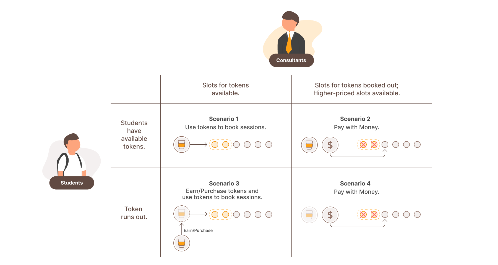
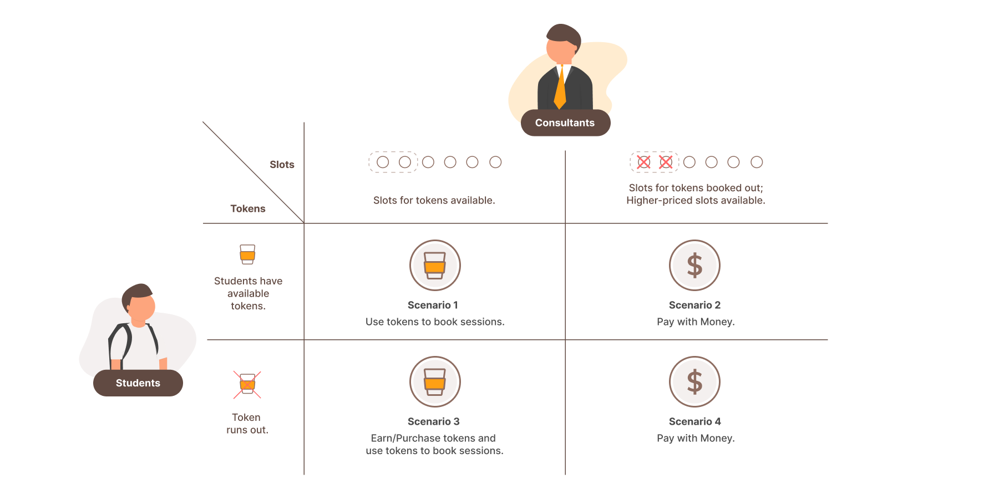
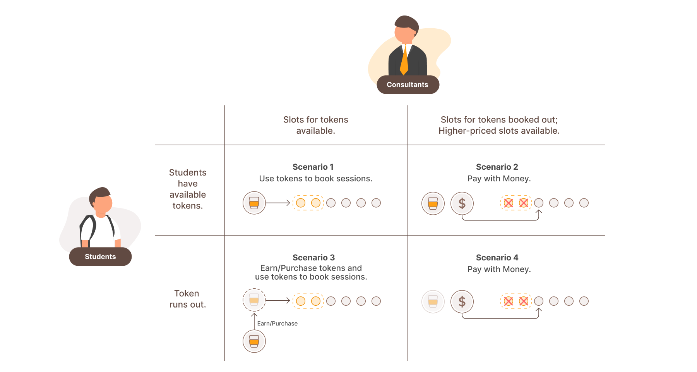
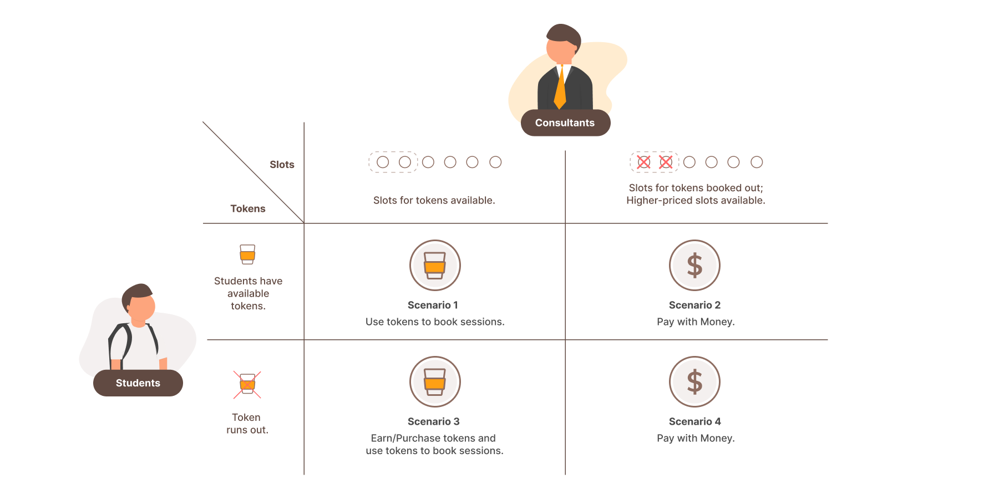

CREATIVITY LAB
A platform that fosters creativity through activity prompts, curated content, and documentation of child creative growth.

-
Objective
To initiate a change by studying how technology can be conducive to children’s creative learning and to help our community partner, Children’s Creativity Museum (CCM,) to further expand their mission and increase their social impact.
My Role
Research
Design Strategy
Prototyping
User Testing
UI Design
Project ManagementTeam
Sanuree Gomes,
Rucha Takalikar,
Janani Venkatachalam,
Hyun Chung YeonAdvisors
Marc O'Brien,
Sarah Harrison,
Kristian SimsarianDuration
Feb, 2020 - Dec, 2020
Objective
To initiate a change by studying how technology can be conducive to children’s creative learning and to help our community partner, Children’s Creativity Museum (CCM,) to further expand their mission and increase their social impact.
My Role
Research, Information Architecture, Prototyping, User Testing, UI Design, Project Management
Team
Sanuree Gomes, Rucha Takalikar, Janani Venkatachalam, Hyun Chung (Isla) Yeon
Advisor
Marc O'Brien, Sarah Harrison, Kristian Simsarian
Our Community Partner
The Children's Creativity Museum (CCM) in San Francisco is an interactive museum who offers hands-on, multimedia arts and technology experiences designed to build creative confidence in children ages 2-12. Their mission is to nurture creativity and collaboration in all children and families.
Challenge
Children’s Creativity Museum wants to broaden their impact and create a more immersive educational experience.
As the importance of creativity is recognized as an essential 21st century skill in education, CCM is dedicated to help children build creative confidence by nurturing expression, innovation, and critical thinking. However, CCM faces limits in its ability to serve families who do not visit the facility and would like to build capacity and broaden its impact outside its walls.
How might we help college students better identify and learn the practical skills necessary in work that they may not have learned in school?
Solution
CoffeeChat aims at facilitating the connection between students and professionals. Students could use it to find professionals who have a similar background and currently works in the field/company they are interested in.
It digitalize the coffee chats between students and professionals for experience and knowledge sharing, so that students won't be hindered when they are seeking suggesions from the industry even under the circumstance of COVID-19.
Video Chat Booking
Users can search for consultants that fit their needs and check their information on their profile page. From there, they can book a video chat session for face to face consulting.
Question-Based Consultation without Booking
When the user have more straightforward questions to ask a consultant, they can send an inquiry to this consultant instead of booking a video call session. This is also a more flexible consulting approach when it is difficult to schedule a meeting time.
Pay Consultants with "Coffee"
CoffeeChat uses coffee cups as credits to pay for the service as this app aims to retain and encourage the coffee chat, which is a great way for students to chat with professionals before the pandemic. The amount of payment will be decided by how much they use this platform.
Question-Based Consultation without Booking
When the user have more straightforward questions to ask a consultant, they can send an inquiry to this consultant instead of booking a video call session. This is also a more flexible consulting approach when it is difficult to schedule a meeting time.
Research
Interviews & Synthesizing
-
Qualitative interviews were conducted to understand college students' thoughts on college education and how they prepared for their careers.
-
"There's no one told me what I should do in life (before graduation). I searched online to see how other people dealt with similar problems before."
-- Eric, Industrial Design Student
-
"If there are opportunities for mentorship, I want to know if they fit and understand my situation. I don’t want to waste their time and mine."
-- Tom, Electronic Computer Engineering Student
-
I also interviewed prople who graduates within 3 years to learn their journey of starting their career and their thoughts on mentoring younger generations.
-
"I struggled a lot when I was trying to find a job before graduation. I would like to help newer generations when they are starting their career. I don't want to earn money from it."
-- John, Backend Engineer, 3 years in industry
-
"If it takes a mentor too much commitment and time, I think it's fair for the mentee to offer something back."
-- Sam, Software Engineer, 1 year in industry


Findings

Students need guidance from experienced people who understand their situation to preprare for their career. However, these people are hard to find.

In general, students don't want to pay too much for consultancy and mentorship. They need to ensure the quality of the service if they need to pay more.

It is controversial whether people should pay for mentorship relationships, and there is yet no standard price if payment is involved.
OPPORTUNITY #1
How might we help students to consult professionals with ease？
Market Research
I studied how the current market solves this problem and found out that
there are two types of services, charged and free.
The charged ones are charging users high prices
(Like in MentorCruise, a 30-min introductory call can cost from $39 to $100)
with more standardized services.
As for the free ones like UX Coffee Hours, professionals join as volunteer consultants to give back to the community.
However, the coverage of current services is limited for the reasons shown in the table.

OPPORTUNITY #2
How might we design a service that could cover a larger group of students and professionals？
Ideation
OPPORTUNITY #1
How might we help students to consult professionals with ease？
To facilitate the process students consulting professionals, CoffeeChat uses video chat and text-based questions as the consulting channels.
From my market research, all the services that tries to tackle this problem are based on video chatting for its accessibility.
However, for the free ones, the slots can be booked out really fast;
and for the charged ones, there is no alternative ways of consulting that is more affordable for students.
Thus, to increase the flexibility and accessibility, CoffeeChat allows students to send consultants questions as text-based consultation.

OPPORTUNITY #2
How might we design a service that could cover a larger group of students and professionals？
To attract professional to become consultants at CoffeeChat, incentives are important, as the professionals don’t have to use a platform to find mentees.
Thus, consultants in this platform should be paid.
However, not all students are willing to pay a lot for this type of service and not all professionals came to CoffeeChat for money.
To facilitate and encourage coffee chats which come from people’s goodwill, a flexible payment system is implemented with coffee cup tokens.
How does it work?

Students
Coffee cups are used as tokens to pay for a limited number of consultations every month. If they want to book more sessions, they will need to pay for a higher price without using the tokens.
Here are some of the rules:
-

Once students registered, there will be 8 coffee cups available for them to book calls.
-
Every week, the user can receive 1 cup for free until the number reached 10, which is the maximum.
-
Users can complete tasks (like watching ads) to earn coffee cups or purchase some directly.
Consultants
Consultants/Professionals have the freedom to set the number of call slots that can be paid with coffee cup tokens. The tokens they received will be shown in their data and be transferred as real money in their account.
When the slots are all booked, they can still respond to several questions or set open consultation slots with higher prices. They can invest more time and open more high-price slots to earn more money.
Scenarios of Paying
 



Advantages
For Social Good
As the goal is to digitalize coffee chat, coffee cup tokens encourages people to help the younger generation.
It downplays the transactional aspects of the service. Students could pay with it as if they were paying with cups of coffee, the way they did in return in real coffee chats.
For consultants, the number of tokens they received will be displayed to encourage them to help more.
For Business
For consultants, coffee cups can be transferred to real money. Along with displaying the number of cups they have received, this token could serve as an incentive to motivate professionals to sign up and invest their time in CoffeeChat.
The strategy is to cultivate trust by providing flexibility, making the charged consultation more acceptable to students. As they know what they are paying for, they are more likely to purchase the high-priced services.
Iteration
WireFrames
I first sketched out the low fedelity wireframes on paper, and then used Figma to create mid-fidelity wireframes accordingly. Next, I used these wireframes to make a clickable mid-fidelity prototype in Figma for user testing.

User Testing
I tested the mid-fidelity prototype with 6 participants.
Then, I used Miro to debrief these testing sessions and sort them into themes.
Next, I used the Rainbow Spreadsheet and Jakob Nielson's usability scale to measure the intensity of the usability issues.
The images shown are the screenshots of these two processes.
This is the major testing session that tested all the main features.
After making changes according to the result, I did multiple rounds of iterations with more task-based testing, A/B testing, and card sorting to validate ideas and assumptions.

Design Choices
Displaying Availability
The user needs to pick the date and time from the consultant's available slots to schedule a video call session.
The challenge is visualizing the availability in a limited screen real estate.
Inspired by Google Calendar, my solution is to ask users to choose the duration, pick an ideal slot, and pick the start time of the call at the end.
From A/B testing, I learned that users prefer this one over the pattern Calendarly is using, because CoffeeChat is more straightforward and all the tasks can be done in one page.

Displaying Tokens & Price
In the early phases, the coffee cup is considered only a representation of the numeric price to downplay this service's transactional aspect.
So users will need to memorize the exchanging ratio.
Though in the testing sessions with students, participants found it acceptable, they agreed that this could be more intuitive.
From the professionals' testing, I realized that I need to go deeper to design a complete token system and think more about viability.
Thus, in the new token system, coffee cup tokens became an independent payment method instead of a pure representation of the numeric price.
As users don't have to memorize the cup's monetary value anymore, the interaction became more intuitive.

Replacing Rating with Stars
When I tested it with students, the star rating system seems fine as it helps students to choose professionals to work with.
However, I realized that the consultation session from professionals' goodwill shouldn't be rated with stars from the testing with professionals.
The real coffee chats shouldn't be rated this way either.
So I redesigned the feedback system as thumb-ups and optional text-based feedback that could be sent privately to the consultants at the end of each session.
Metrics
Here are 5 metrics that should be tracked to measure how well our solutions help CCM increase positve impact:
- The average number of pictures and videos taken during each activity.
- The percentage of people who share their pictures/clap on projects shared by others on the community page.
- The number of people that reached the final screen for purchasing merchandise by checking out.
- Income generated from the app through ticket and merchandise sales every month.
- Tracking the monthly active users.
Future Steps
Expanding to new platforms for tablets, desktops. Creating a web app to better utilize their domain name, creativity.org. Integrating the app to sync with the museums onsite activities and exhibits Creating channels for CCM educators to host activities live on the app
Reflections
This project helped me learn the process of end-to-end product design and understand why system thinking is crucial in experience design. When designing a platform containing both service providers and receivers, it is important to include both sides of users in designing the system. Even though I can only start with one side of the platform, I need to understand other users to make decisions. Design decisions and features for one side are usually decided by the need and preference of the other side.